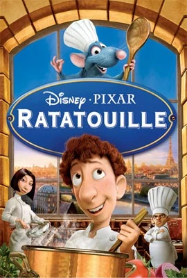

Remy reside em Paris e possui um sofisticado paladar. Seu sonho é se tornar um chef de cozinha e desfrutar as diversas obras da arte culinária. O único problema é que ele é um rato. Quando se acha dentro de um dos restaurantes mais finos de Paris, Remy decide transformar seu sonho em realidade.
Le Festin- Camille